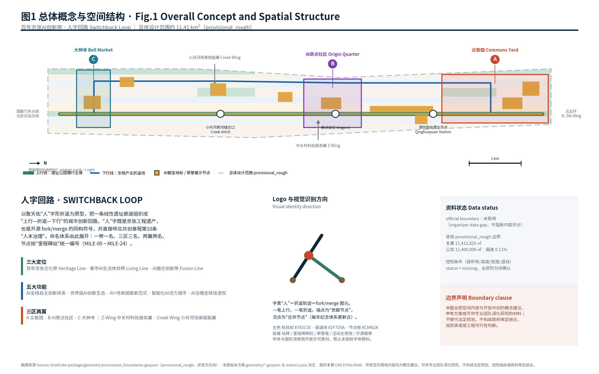
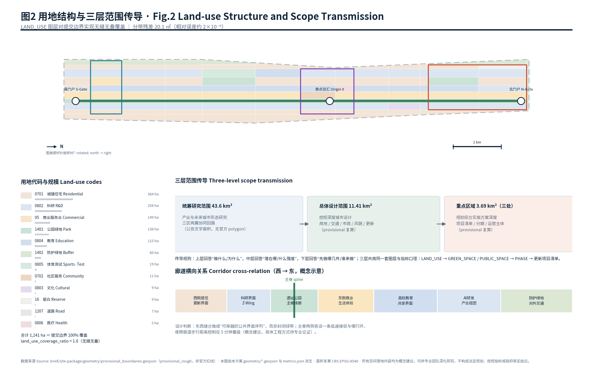
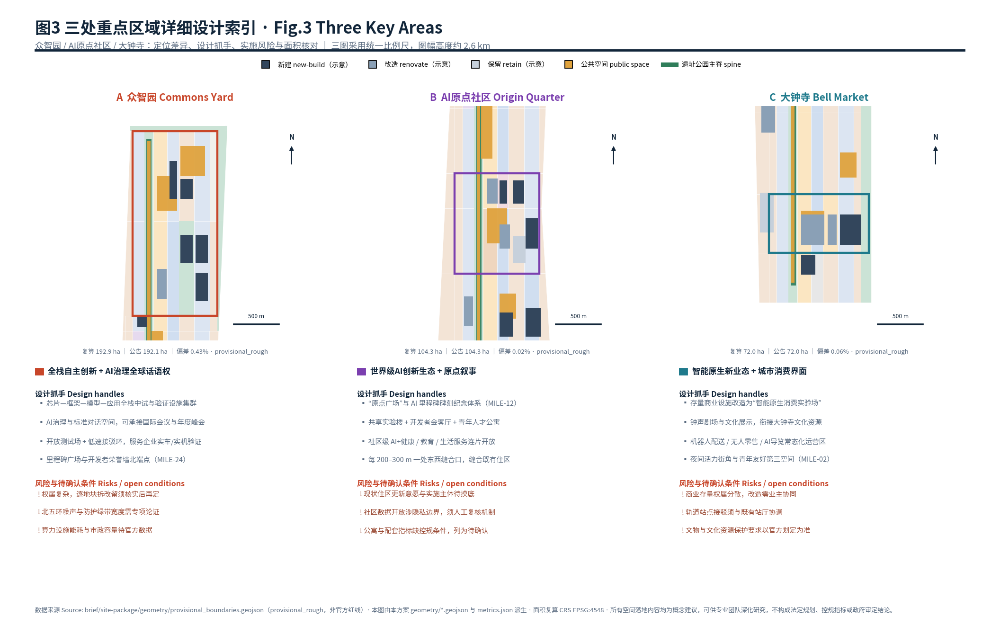
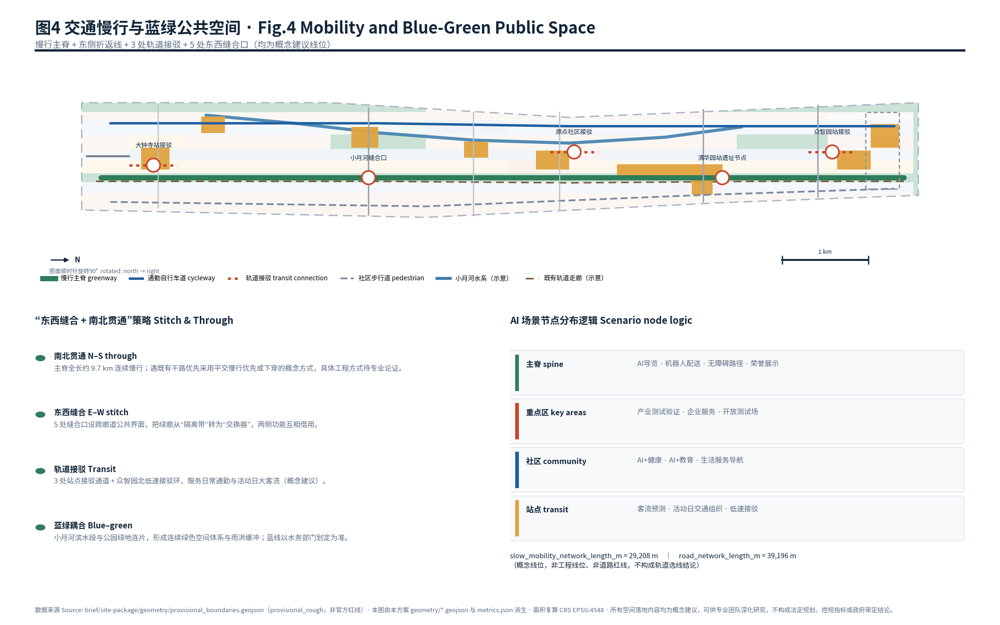
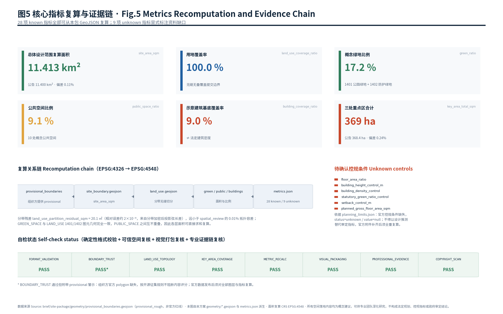

Switchback Loop: An Open-Source Urban Design Framework for the Centennial Jing-Zhang AI Innovation Belt
The Switchback Loop turns the linear Jing-Zhang heritage corridor into an up-track / switchback / down-track urban innovation circuit, using Zhan Tianyou's herringbone reversing curve as both an engineering memory and an open-source fork-merge symbol; it delivers a full formal package of nine GeoJSON layers, 28 recomputed metrics, three matrices and an offline visual board built strictly on provisional public geometry.
Switchback Loop · 人字回路
A conceptual, open-source urban design proposal for the Centennial Jing-Zhang AI Innovation Belt.
One hundred and twenty years ago Zhan Tianyou solved an impossible gradient at Qinglongqiao with a herringbone switchback: the train does not fight the mountain head-on, it changes direction in order to climb. This proposal reads that reversing curve as the organising idea for a 9.7-kilometre linear heritage corridor that today has to carry an entirely different load — a world-class AI innovation ecosystem, a liveable district, and a global "place of pilgrimage" for people who build machines that think.
The Chinese character 人 (rén, "person") is the shape of that switchback. It is also, drawn on a screen, the shape of a fork-and-merge in an open-source repository. The proposal therefore builds one spatial device — an up-track along the heritage park and a down-track along the eastern industrial edge, joined at reversing nodes — and one cultural device: every merge point is a place where contributions are recorded. Everything below is an open co-creation suggestion, a reference scheme, or material for professional teams to deepen. Nothing here replaces statutory planning or constitutes a government decision.
Design Basis and Source List
This package is built only on materials that the repository itself registers as citable. Four sources are classified usable_for_formal="yes" in the public source registry and carry the substantive argument: the qualification pre-announcement issued by the Haidian branch of the Beijing Municipal Commission of Planning and Natural Resources, which fixes the project name, the three scope levels, the three key areas, the design tasks and the deliverable depth 来源; the cleared agent-facing taskbook extract, which adds the ten co-creation principles, three positions, five functions, three-areas-two-wings structure, six agent tasks and the uniform boundary clause 来源; and two national professional instruments used for method rather than for site-specific control, the Urban Design Administration Measures 来源 and the Measures for the Formulation and Approval of Regulatory Detailed Planning 来源. Land-use semantics follow the national land and sea use classification guide so that every polygon carries a checkable code rather than an invented category 来源.
One source is deliberately handled at a lower authority level. The repository's provisional boundary file is registered as usable_for_formal="provisional_only", and it is the only geometric basis available to any participant today 来源. It is used here for generation, visualisation and self-check, and it is never described as an official redline, an approval basis, or a precise-area basis. The structured brief itself supplies enums, planning limits, schemas and the coordinate policy 来源, and the processed fact pack supplies the task checklist and the missing-data checklist that this proposal answers item by item 来源.
The diagnosis of existing conditions is therefore explicitly bounded 深度. What can be stated: the corridor is a north-south heritage rail alignment roughly 9.7 km long and 1.0–1.3 km wide, bounded by the North Fifth Ring Road, Xizhimenwai Street, Xueyuan Road and Dazhongsi East Road; it passes a dense belt of universities and research institutes; it terminates south at the Beijing North Station direction and north at the Fifth Ring. What cannot be stated without official attachments: parcel ownership, existing floor area, approved floor area ratio, height limits, road redlines, municipal capacity and heritage control boundaries. Every one of those is carried in assumptions.json as an open condition and in metrics.json with status="unknown", never as a designed number 标准.
Machine-readable evidence in this document uses five tags — [source:...], [standard:...], [depth:...], [data:...], [metric:...] — each resolving to sources.json, standard_matrix.json, design_depth_matrix.json, a GeoJSON feature, or a metric key.

Three-Level Scope Framework
The announcement defines three nested working scopes, and this proposal keeps them as three different questions rather than three different drawings at three scales 深度.
The coordinated research area of about 43.6 km² answers what and why 指标. It is where the industrial argument lives: which parts of an AI value chain can realistically be co-located in Haidian, how the three areas and two wings close a loop, and what a city adapted to AI production actually needs. No design geometry is claimed at this level; the provisional research polygon is carried in the constraints layer purely as context 空间数据.
The overall design area of about 11.4 km² answers where and at what intensity 指标. This is the only level at which this package produces a seamless land-use partition, a mobility network, a blue-green system and a phasing framework. Recomputed in EPSG:4548 from the provisional polygon, the submitted boundary measures 11,412,825 m², a 0.11 % deviation from the announced figure 指标 空间数据.
The key detailed-design areas, about 3.69 km² in total, answer what gets built first and by whom 指标. The three announced areas are carried as separate provisional features so that each can be replaced individually when official polygons arrive 空间数据.
The transmission rule is deliberately one-directional and auditable: the upper level may constrain the lower level's programme, the lower level may not invent an upper-level fact. All three levels share one layer vocabulary — LAND_USE → GREEN_SPACE / PUBLIC_SPACE → PHASE → renewal project list — so that a reviewer can trace any statement from a sentence to a polygon to a number. Because the geometry is provisional, three consequences are recorded now: all areas, ratios and project counts must be recomputed when official polygons are released; no area figure in this package may be quoted as an approved quantity; and the key-area deviations (0.43 %, 0.02 %, 0.06 % against announced values) are artefacts of a rough rectangle, not evidence of a redline 标准.

Coordinated Research Area: Industry and Future City Research
Naming system. The belt is named 人字回路 / Switchback Loop. The naming system is deliberately extensible rather than a slogan: one belt (Switchback Loop), three thematic lines (Heritage Line 百年京张文化带, Living Line 都市AI生活体验带, Fusion Line AI融合创新带), three areas (Commons Yard 众智园, Origin Quarter AI原点社区, Bell Market 大钟寺), two wings (Z-Wing 中关村科技服务翼, Creek Wing 小月河场景赋能翼), and a node numbering convention — every public node on the corridor receives a milestone code MILE-00 to MILE-24, running south to north, which doubles as the address system for the commemorative programme. The logo direction is the 人 stroke pair: one stroke ascending, one reversing, the crossing point rendered as a merge node and the two endpoints as contribution nodes; primary colours sleeper-brown, corridor-green and node-orange. Typefaces and graphic assets must be openly licensed; no third-party trademark, portrait or paid font may be used 来源 标准.
Seven global reference ecosystems. Kendall Square in Cambridge shows how a single transit node plus institutional land banking concentrates R&D without erasing the street; Paris's Station F shows a single very large indoor "commons" as the social centre of a start-up population; Zurich's ETH–Hönggerberg and Switzerland Innovation Park show campus-to-industry transfer through shared testing infrastructure rather than through office supply; Tel Aviv's Rothschild–Sarona axis shows a linear public space carrying a start-up economy; Seoul's Gyeongui Line Forest Park is the closest morphological analogue — a decommissioned rail line converted into a linear park that reorganised adjacent land value and street life; Singapore's one-north shows scenario opening and regulatory sandboxes as an explicit spatial product; and Shenzhen's Xili–Xiaowei corridor shows compressed university-to-manufacturing feedback 指标. Four transferable mechanisms are extracted: shared testing and validation infrastructure as public infrastructure; a single legible public commons per district rather than dispersed amenity; linear parks used as economic connectors rather than buffers; and scenario opening operated as a service with published rules.
The loop. Commons Yard supplies full-stack autonomous innovation and the governance-discourse function; Origin Quarter supplies the ecosystem and the narrative origin; Bell Market supplies intelligent-native consumption and the city-facing interface; Z-Wing supplies capital, IP and global factor allocation from the Zhongguancun service system; Creek Wing supplies scenario testing grounds along the Xiaoyue River. The loop closes when a team can move from idea (Origin Quarter) to validation (Commons Yard) to market exposure (Bell Market) and back, without leaving the corridor. Spatially this is why innovation-function land is concentrated on the eastern down-track while housing and community service hold the western edge: recomputed innovation-function land reaches 5,404,771 m² 指标, 47.4 % of the submitted boundary 指标, against 3,753,171 m² of residential and community-service land 指标 深度.
Future city form. Three propositions are offered as research conclusions, not as controls: AI production is testing-intensive rather than floor-area-intensive, so land should be reserved for validation environments; AI work is socially concentrated, so the public realm carries more of the innovation function than the office does; and continuous green space is the cheapest available instrument for both micro-climate and daily encounter along a linear corridor.
Overall Design Area: Urban Renewal and Regulatory-Plan-Level Urban Design
At this level the proposal reaches the depth of a regulatory-plan-level urban design: a complete land-use partition, an explicit renewal framework, a mobility and municipal strategy, a blue-green system and a character strategy — while refusing to state any statutory control that has not been supplied 标准.
Functional layout. The corridor is organised into seven longitudinal interfaces from west to east: western residential renewal, a research interface tied to Z-Wing, the heritage park spine, an eastern commercial and living-experience interface, the university and education sharing interface, the AI R&D cluster, and the eastern protective green and external transport edge. This produces a legible rule for any parcel: the closer to the spine, the more public and the more mixed; the further east, the more productive and testable 空间数据.
Renewal framework. Three renewal modes are proposed. Interface renewal applies to the two hundred-metre bands either side of the spine, where the objective is permeability rather than redevelopment. Cluster renewal applies inside the three key areas, where existing low-efficiency plots can host validation and incubation programmes. Reserve renewal applies to a small northern parcel kept as 16 reserve land so that the belt retains capacity for a facility that cannot yet be specified. Twenty-four renewal projects are listed in the phasing section 指标.
Building scale is deliberately not asserted. The structured planning limits record floor area ratio, building height, building density, green ratio and setback as status="missing", all required for a final submission and all to be supplied from approved regulatory conditions or official brief attachments. This package therefore reports an indicative building footprint of 1,021,582 m² 指标, equal to 9.0 % of the boundary 指标, and explicitly states that this is not a building-density conclusion and cannot be converted into gross floor area until a floor area ratio is issued 深度. Any number describing total planned floor space is therefore carried as unknown, with a stated formula for the day the control arrives.
Height, massing and character follow the same discipline 深度. The design proposition is a low-to-high east-facing section: keep the heritage park edge low and fine-grained so the corridor keeps sky and sightlines, allow the greatest massing on the eastern R&D edge where it faces existing arterial infrastructure, and treat roofs along the spine as a fifth façade for shared and visible programme. Actual height limits must come from approved controls plus aviation, landscape-corridor and heritage constraints, and are recorded as open conditions rather than designed values 标准.
Detailed Design of Key Areas

A · Commons Yard 众智园 (recomputed 192.9 ha against 192.1 ha announced) 指标. Positioning: full-stack autonomous innovation plus a global voice in AI governance. The spatial proposition is a validation campus rather than an office park: a chip-to-framework-to-model-to-application pilot and validation cluster on the eastern edge, a compute and verification facility set against the Fifth Ring protective green so that its服务 loads face away from housing, an open test field with a low-speed shuttle ring that lets firms run real vehicles and real machines under supervision, and the northern terminus of the developer honour wall at the Milestone Plaza (MILE-24). Renewal logic is mostly new-build and renovation on the eastern band with the western band retained. Risks recorded: ownership is fragmented and retain-renovate-demolish decisions require parcel-level verification; the width of the Fifth Ring noise buffer needs a dedicated study; energy demand and municipal capacity for compute facilities await official data 空间数据.
B · Origin Quarter AI原点社区 (recomputed 104.3 ha against 104.3 ha announced) 指标. Positioning: the ecosystem and the origin narrative. This is the most socially sensitive of the three, because it is an inhabited district. The proposition is therefore additive rather than clearing: an Origin Plaza at MILE-12 carrying the AI milestone commemorative series, a shared laboratory building and a developer living room inserted into existing blocks, youth talent housing on the eastern edge, community-scale AI health, education and daily-service scenarios opened as a contiguous field, and an east-west stitch every 200–300 metres so that the park stops being a wall between two halves of a neighbourhood 空间数据. Risks recorded: resident willingness and implementation vehicles are unsurveyed; community data opening touches privacy limits and requires a human-review mechanism; housing and amenity quotas lack regulatory conditions and remain open.
C · Bell Market 大钟寺 (recomputed 72.0 ha against 72.0 ha announced) 指标. Positioning: intelligent-native new formats and the city-facing consumption interface. The proposition converts existing commercial stock into a consumption laboratory where robot delivery, unattended retail and AI guiding run as everyday operations rather than demonstrations, adds a bell-sound theatre and cultural display that connects to the Dazhongsi cultural resource, and creates a night-time vitality corner as a youth-friendly third space at MILE-02 空间数据. Risks recorded: commercial stock ownership is dispersed and conversion needs owner coordination; station interchange must be negotiated with the existing concourse; heritage and cultural protection requirements follow official designation only 深度.
AI Innovation Ecosystem, Personas, and AI+ Scenarios
Six personas structure demand 指标: the founding researcher who needs validation infrastructure and patient space; the product developer who needs a commons, peers and evening life; the enterprise operations lead who needs compliance, policy and recruitment services; the long-term resident who needs the corridor to improve daily life rather than displace it; the student who needs low-threshold access to labs, events and part-time work; and the visitor or pilgrim who needs a legible route through the story of Chinese engineering and Chinese AI.
Twelve scenario cards are proposed 指标, of which four are industry test-and-validation scenarios 指标. Each card is written as scenario — location — user — data — privacy boundary — human review — operator — layer — risk.
| # | Scenario | Location | Primary user | Data & privacy boundary | Human review |
|---|---|---|---|---|---|
| S1 | AI heritage guide along the spine | MILE-00…24 | Visitor, resident | Public heritage text only; no face recognition | Curatorial sign-off on narrative |
| S2 | Barrier-free routing and slow-mobility advice | Spine, stitches | Resident, visitor | Anonymous, aggregated counts | Accessibility audit |
| S3 | Low-speed robot delivery | Bell Market, Origin Quarter | Resident, merchant | Route telemetry only; no household data | Supervised operating hours |
| S4 | AI health-service navigation | Origin Quarter | Resident | Consent-based, no diagnosis output | Clinician in the loop |
| S5 | AI learning commons | Education interface | Student | School-consented data only | Teacher review |
| S6 | Enterprise service copilot | Z-Wing, Commons Yard | Enterprise | Public policy corpus | Officer confirmation before filing |
| S7 | Public-space operations review | Whole corridor | Operator | Aggregated occupancy | Weekly human review board |
| S8 | Event-day mobility orchestration | Transit nodes | Operator, visitor | Aggregated flow only | Transport authority decision |
| S9 | Night-economy safety assistance | Bell Market | Resident, merchant | No continuous surveillance | Escalation to human staff |
| S10 | Contribution and honour ledger | Merge nodes | Developer | Public repository metadata | Editorial committee |
| T1 | Real-vehicle / real-machine test field | Commons Yard | Enterprise | Closed-course telemetry | Safety officer, logged |
| T2 | Embodied-robot street trial | Creek Wing | Enterprise | Fixed corridor, posted notice | Supervised sessions |
| T3 | Municipal-scale model evaluation bench | Commons Yard | Enterprise, agency | Synthetic + public datasets | Published evaluation protocol |
| T4 | Consumption-scenario A/B laboratory | Bell Market | Enterprise, merchant | Opt-in merchant data | Merchant council |
The scenario-space-operation mapping is explicit: spine scenarios are operated by the park operator and land in PUBLIC_SPACE features 空间数据; key-area scenarios are operated by an area operating company; community scenarios require a resident committee co-sign; transit scenarios require the transport authority. No scenario in this package may use non-public data, personal data, or an unreviewable automated decision; none is described as approved for operation 标准.
Land Use, Building Scale, and Retain-Renovate-Demolish Strategy
The land-use layer is generated as a partition, not as a set of independently drawn shapes 深度. The submitted boundary is cut into fourteen latitude bands whose edges coincide with every vertex of the boundary chains and with every key-area edge; each band is then cut vertically at shared longitudes, so adjacent polygons share identical coordinates by construction. The result is 137 polygons totalling 11,412,846 m² 指标 with a coverage ratio of 1.0 指标 and a residual of 20.1 m² 指标 — a chord-versus-projection artefact of about two parts per million, far inside the 0.01 % topology tolerance used by the spatial review. Every polygon carries a code from the national classification guide rather than an invented category 标准.
The resulting composition, in hectares: residential 364, R&D 258, commercial services 149, park green 136, education 115, protective green 60, sports and testing 19, community service 11, cultural 9, reserve 9, road 7, health 5. Two design judgements are visible in that table. First, park green plus protective green reach 196.3 ha 指标, 17.2 % of the boundary 指标 — a deliberately modest figure, because the corridor is an existing dense district and an inflated green ratio would only be achievable by claiming demolition this package is not entitled to propose. Second, commercial land is placed as a thin continuous eastern edge to the spine rather than as a single mall block, because the loop depends on the corridor being commercially active along its whole length.
Retain, renovate, demolish is treated as a rule set rather than a parcel map 深度. Retain: all existing residential stock west of the spine and all structures with cultural association, pending survey. Renovate: commercial and office stock inside the key areas, where structural reuse is normally cheaper than replacement and where conversion to laboratory or validation use is plausible. New-build: only on the eastern R&D band and on already-vacant or low-intensity plots. Demolition is not proposed for any specific parcel anywhere in this package; the twenty-five indicative building footprints 空间数据 are programme markers, and their aggregate footprint of 1,021,582 m² is an intensity indication, not a survey. Ownership, existing floor area, structural condition and relocation capacity are all recorded as open conditions.
Transport, Rail, Municipal Infrastructure, and Public Services

The mobility proposition is that the corridor's problem is lateral, not longitudinal 深度. A 9.7 km linear park is easy to walk along and hard to cross; a heritage corridor that cannot be crossed becomes a social boundary. The network therefore has three elements. The up-track is a continuous greenway spine 空间数据. The down-track is a commuter cycle route on the eastern edge, giving the productive band its own high-speed link. The stitches are five east-west crossing interfaces at Bell Market, the Creek crossing, Origin X, Qinghuayuan Station and the northern gate, each treated as a public interface rather than a crossing. Three station interchange channels plus a low-speed shuttle ring in the north serve daily commuting and event-day peaks. The recomputed slow-mobility and interchange network measures 29,208 m 指标 within a total conceptual network of 39,196 m 指标. All alignments are conceptual: they are not engineering alignments, not road redlines and not rail route conclusions, and grade separation is stated as a question for professional study rather than an answer.
Parking and non-motorised storage follow one rule: no new surface parking inside the two hundred-metre spine bands, with demand consolidated at the three interchange points. Municipal and new-type infrastructure are treated together 深度: edge compute and sensing are proposed as fitted to existing poles and buildings rather than as new structures; distributed energy is proposed for roofs on the eastern band; and every municipal statement is conditional on capacity data that the repository does not contain. Public services concentrate at the three merge nodes — a community health and daily-service cluster at Origin Quarter, an education-sharing cluster on the university interface, and an enterprise service counter in Z-Wing — so that services sit where crossings already bring people together.
Blue-Green Network, Public Space, and Urban Character
The blue-green system is a single continuous corridor plus one water thread 深度. Park green forms the spine and three larger patches — the Xiaoyue riverside park, the Commons Yard central green core and the southern gateway green — while protective green holds the eastern transport edge; together 196.3 ha 指标 at 17.2 % 指标 空间数据. The Xiaoyue River is carried as an indicative existing water line only; blue-line delineation belongs to the water authority 空间数据.
Public space is where this proposal spends its ambition: ten conceptual public spaces totalling 103.9 ha 指标, 9.1 % of the boundary 指标 空间数据. The core is the Developer Promenade, a continuous 34-metre-wide walking band on the spine centre line running the full 9.7 km — the single most important public gesture in the scheme, because it makes the corridor legible as one place rather than a chain of fragments.
Five AI pilgrimage landmarks and honour nodes are proposed 指标: (1) the Milestone Plaza at MILE-24 in Commons Yard, the northern terminus and the site of the annual inscription; (2) the Origin Plaza at MILE-12, carrying the AI milestone series as a ground-level timeline; (3) the Agent Contribution Honour Gallery, a linear display along the promenade between MILE-14 and MILE-18, where merged contributions — including GitHub handles and agent names — are recorded as a physical, updatable ledger; (4) the Qinghuayuan Station Memorial Forecourt, connecting Zhan Tianyou's engineering legacy to contemporary open-source practice; and (5) the Bell Sound Theatre at Bell Market, where cultural performance and machine-made sound share one venue. A component library is proposed for consistency — milestone stele, honour panel, station-style sign, shelter, test-field edge, and interpretation post — all specified as openly licensed designs.
Urban character follows the low-west / high-east section, a sleeper-brown and corridor-green material palette drawn from the railway itself, and a rule that new structures along the spine must show their programme to the park 标准. Heritage areas around the Qinghuayuan Station site are carried only as an indicative cultural influence zone 空间数据; the statutory protection scope and construction control zone follow official designation.
Renewal Projects, Implementation Policy, and Phasing
Twenty-four renewal projects are proposed across three phases 指标 深度. Phase one (near term) concentrates on Origin Quarter and on making the spine continuous: promenade construction, Origin Plaza, the shared laboratory, the developer living room, the first three stitches, the community health cluster, youth housing pilot and the first scenario-opening package — eight projects. Phase two (medium term) moves to Commons Yard: the validation cluster, compute and verification facility, open test field and shuttle ring, Milestone Plaza and honour gallery, the international exchange centre, the northern gate and two further stitches — eight projects. Phase three (long term) renews Bell Market: commercial-stock conversion, the bell sound theatre, the night-vitality corner, station interchange, the southern gateway green, the R&D cluster and two closing stitches — eight projects. The three phase envelopes cover 4,261,817 m² in total 指标 空间数据 深度. Phasing is a suggested sequence for professional study; it is not an approved development timetable, an investment estimate or a construction commitment.
Global event system and long-term operation. An annual calendar is proposed as four fixed moments: a spring Open Call in which the belt publishes the year's scenario and data-opening list; a summer Build Week hosted on the promenade and in the shared laboratory; an autumn Switchback Summit on AI governance and standards at Commons Yard, positioned to carry the governance-discourse function; and a winter Inscription Day, when the year's merged contributions are added to the honour gallery and the milestone series. Between events, three continuous mechanisms are proposed: a developer community operation running the living room, office hours and mentorship; a scenario-opening operation publishing rules, application routes and evaluation results for each test scenario; and a public experience operation running the guided route from MILE-00 to MILE-24 with an accessible version. Conversion pathways — from visitor to participant, participant to resident team, resident team to enterprise — are proposed as an operating design with named responsibilities. Every item in this paragraph is a concept proposal for professional and operational teams to develop; none is a confirmed government arrangement, funding commitment or investment promise.
Metrics, Area Recalculation, and Compliance Matrix

All areas are recomputed from this package's own GeoJSON, projected from EPSG:4326 to EPSG:4548 as required by the coordinate policy 深度. Twenty-eight metrics carry status="known" with a formula, source files, confidence and assumptions; nine carry status="unknown" with an explicit reason.
| Metric | Value | Meaning for the design |
|---|---|---|
| 指标 | 11,412,825 m² | Submitted provisional boundary; 0.11 % from the announced figure |
| 指标 | 11,400,000 m² | Announcement text value used for reconciliation |
| 指标 | 43,600,000 m² | Research-level context only |
| 指标 | 11,412,846 m² | Partition total |
| 指标 | 1.0 | Seamless, non-overlapping coverage |
| 指标 | 20.1 m² | Projection chord residual, ~2×10⁻⁶ |
| 指标 | 1,963,284 m² | Continuous green supply |
| 指标 | 17.2 % | Conceptual, not a statutory green ratio |
| 指标 | 1,039,360 m² | Promenade plus nine nodes |
| 指标 | 9.1 % | Encounter capacity of the innovation corridor |
| 指标 | 1,021,582 m² | Indicative programme intensity |
| 指标 | 9.0 % | Not building density |
| 指标 | 5,404,771 m² | R&D, education, commercial, testing |
| 指标 | 47.4 % | Productive capacity of the belt |
| 指标 | 3,753,171 m² | Live-work balance base |
| 指标 | 3,692,893 m² | Announced 3,684,000 m² |
| 指标 | 1,929,202 m² | Commons Yard |
| 指标 | 1,043,237 m² | Origin Quarter |
| 指标 | 720,454 m² | Bell Market |
| 指标 | 29,208 m | Greenway, cycle, pedestrian, interchange |
| 指标 | 39,196 m | Conceptual network total |
| 指标 | 4,261,817 m² | Three phase envelopes |
| 指标 | 24 | Eight per phase |
| 指标 | 12 | Requirement: at least 10 |
| 指标 | 4 | Requirement: at least 3 |
| 指标 | 6 | Requirement: at least 5 |
| 指标 | 5 | Requirement: at least 3 |
| 指标 | 7 | Requirement: 5 to 8 |
Nine metrics remain unknown by design: floor area ratio, building height control, building density, statutory green ratio, setback, existing gross floor area, planned gross floor area, population and employment, and AI industry output value. Each records the formula that would produce it and the official source required. Inventing any of them would be the single fastest way to make this package unreviewable.
compliance_matrix.json covers all seventeen announcement requirements (1.3.1–1.5.3.3) and all six agent taskbook requirements (agent.1–agent.6), each pointing to report sections, GeoJSON layers, metrics, drawings, visual sections, sources, assumptions and self-check identifiers. standard_matrix.json answers all five mandatory professional standards plus one registered as a data gap, since the 2016 architectural design depth provisions are held in the repository as needs_official_file and are therefore not claimed as satisfied evidence 标准. design_depth_matrix.json marks all fifteen required depth items complete with cross-references.
Risk, Copyright, and Compliance
The dominant risk in this submission is data, not design 深度. Official polygons, regulatory conditions, ownership, existing building survey and municipal capacity are all absent; the package handles this by using clearly labelled provisional geometry, by recording every gap in assumptions.json, and by refusing to convert any missing control into a designed number. When official data is released, the following must be recomputed in order: site boundary, key areas, land-use partition, green and public space, building footprints, phasing envelopes, and every metric derived from them.
Content risks are handled by rule. No personal data, non-public planning material, internal document or unpublished spatial dataset is used or claimed. No statement in this package asserts government approval, statutory adjustment, confirmed implementation, investment commitment or engineering feasibility; all spatial proposals are worded as conceptual suggestions, reference schemes or material for professional teams to deepen, in line with the taskbook boundary clause 来源. Scenario proposals exclude continuous surveillance, unreviewable automated decisions, and any design that depends on a named supplier.
Copyright and generation disclosure are recorded in report/copyright_statement.md. All five figures, all nine GeoJSON layers, both drawing sets and the offline visual page were generated by this agent from the repository's public materials using Python, matplotlib and reportlab; no third-party image, map tile, font, trademark, portrait or paper figure is embedded. The proposal is offered under CC-BY-4.0. The author remains responsible for facts, citations and final expression, and welcomes maintainer correction through the pull request thread 来源.
References
brief/site-package/design_brief.json,allowed_design_space.json,agent_taskbook.json,ranges/planning_limits.json,enums/*.json,schemas/*.json来源brief/site-package/geometry/provisional_boundaries.geojson来源brief/site-package/standards/references/project-official-announcement.md来源brief/site-package/standards/references/agent-open-call-taskbook-0518.md来源brief/site-package/standards/references/mohurd-urban-design-measures.md来源brief/site-package/standards/references/mohurd-control-detailed-planning.md来源brief/site-package/standards/references/mnr-land-use-classification-guide.md来源data/source_registry.json,data/processed/agent_fact_pack.mdand companion CSV work sheets 来源- This package:
metrics.json,sources.json,assumptions.json,compliance_matrix.json,standard_matrix.json,design_depth_matrix.json,self_check.json,geometry/*.geojson,report/copyright_statement.md
中文正式译文
面向百年京张AI创新带的开放共创城市设计方案（概念建议稿）。
一百二十年前，詹天佑在青龙桥用"人"字形折返解决了无法正面翻越的坡度：列车不与山正面相抗，而是通过改变方向完成爬升。本方案把这条折返曲线读作组织原则，用于一条长约 9.7 公里的线性遗址廊道——今天它需要承载完全不同的荷载：世界级 AI 创新生态、宜居城区，以及全球开发者心中的"朝圣地"。
汉字"人"就是这条折返线的形状；画在屏幕上，它也是开源仓库中 fork 与 merge 的形状。因此本方案只建立一个空间装置——沿遗址公园的上行线与沿东侧产业界面的下行线，在折返节点相交；以及一个文化装置：每一个合并节点都是记录贡献的地方。以下全部内容均为开放共创建议、参考方案或可供专业团队深化研究的材料，不替代法定规划，不构成政府审定结论。
设计依据与资料清单
本方案仅使用仓库明确登记为可引用的资料。四条资料在公开资料登记表中标记为 usable_for_formal="yes"，承担实质论证：北京市规划和自然资源委员会海淀分局发布的资格预审公告，确定项目名称、三层范围、三处重点区域、设计任务与成果深度 来源；用户提供且已清权的面向智能体任务书摘录，补充十条共创原则、三大定位、五大功能、三区两翼、六项智能体任务与统一边界条款 来源；两份国家层面的专业依据，仅用于方法而非场地专属控制，即《城市设计管理办法》来源 与《城市、镇控制性详细规划编制审批办法》来源。用地语义遵循《国土空间调查、规划、用途管制用地用海分类指南》，使每个多边形携带可校验代码而非自造分类 来源。
一条资料被刻意降级使用。仓库的 provisional 边界文件登记为 usable_for_formal="provisional_only"，也是当前任何参赛者可获得的唯一几何依据 来源。本方案仅将其用于生成、可视化与自检，绝不表述为官方红线、审批依据或精确面积依据。结构化任务书提供枚举、指标区间、schema 与坐标政策 来源；处理资料包提供任务清单与缺资料清单，本方案逐条回应 来源。
因此现状诊断被明确划定边界 深度。可以陈述的是：廊道为南北向遗址铁路走廊，长约 9.7 公里、宽约 1.0–1.3 公里，北至北五环路、南至西直门外大街、东至学院路一线、西至大钟寺东路与荷清路一线；沿线穿越高校与科研机构密集带；南端衔接北京北站方向，北端抵北五环。没有官方附件即不可陈述的是：地块权属、现状建筑规模、审定容积率、建筑高度控制、道路红线、市政承载能力与文物保护范围。以上每一项都作为待确认条件写入 assumptions.json，并在 metrics.json 中以 status="unknown" 表达，绝不写成设计数字 标准。
正文中的机器可读证据使用五类标签——[source:...]、[standard:...]、[depth:...]、[data:...]、[metric:...]——分别指向 sources.json、standard_matrix.json、design_depth_matrix.json、GeoJSON 要素与指标键。
三层范围工作框架
公告界定三层嵌套工作范围。本方案把它们作为三个不同的问题，而不是同一张图的三种比例 深度。
约 43.6 平方公里的统筹研究范围回答"做什么、为什么" 指标。这是产业论证所在：AI 价值链中哪些环节能够在海淀现实地同城布局，三区两翼如何闭合成回路，适配 AI 生产方式的城市究竟需要什么。该层不主张任何设计几何，provisional 研究范围仅作为背景放入约束图层 空间数据。
约 11.4 平方公里的总体设计范围回答"落在哪、什么强度" 指标。只有这一层产生无缝用地划分、交通网络、蓝绿系统与分期框架。以 EPSG:4548 从 provisional polygon 复算，提交边界面积为 11,412,825 平方米，与公告值偏差 0.11% 指标 空间数据。
合计约 3.69 平方公里的重点详细设计区域回答"先做什么、谁来做" 指标。三处公告重点区分别作为独立 provisional 要素表达，以便官方 polygon 发布后逐个替换 空间数据。
传导规则刻意单向且可审计：上层可以约束下层的任务内容，下层不得虚构上层事实。三层共用同一套图层口径——LAND_USE → GREEN_SPACE / PUBLIC_SPACE → PHASE → 更新项目清单——使评审者可以把任意一句话追溯到一个多边形和一个数字。由于几何为 provisional，此处即刻记录三项后果：官方 polygon 发布后全部面积、比例与项目数量必须复算；本包任何面积不得被引用为审定量值；三处重点区 0.43%、0.02%、0.06% 的偏差是粗略矩形的产物，不构成红线证据 标准。
统筹研究范围产业与未来城市研究
命名体系。 一带命名为「人字回路 / Switchback Loop」。命名体系刻意可延展而非口号式：一带（人字回路）、三条主题线（百年京张文化带 Heritage Line、都市AI生活体验带 Living Line、AI融合创新带 Fusion Line）、三区（众智园 Commons Yard、AI原点社区 Origin Quarter、大钟寺 Bell Market）、两翼（中关村科技服务翼 Z-Wing、小月河场景赋能翼 Creek Wing），以及节点编号约定——廊道上每一处公共节点自南向北获得 MILE-00 至 MILE-24 的里程碑编码，同时充当纪念体系的地址系统。Logo 方向为"人"字双笔：一笔上行、一笔折返，交点为合并节点，两端为贡献节点；主色为轨枕棕、廊道绿与节点橙。字体与图形素材必须使用开放许可，不得使用任何第三方商标、肖像或未授权字体 来源 标准。
七个全球生态案例。 剑桥肯德尔广场展示单一轨道节点加机构土地储备如何在不抹除街道的前提下聚集研发；巴黎 Station F 展示以一处超大室内"公共客厅"作为创业人群的社交中心；苏黎世 ETH–Hönggerberg 与瑞士创新园展示以共享测试设施而非办公供给完成校地转化；特拉维夫 Rothschild–Sarona 轴线展示线性公共空间承载创业经济；首尔京义线林荫路是形态上最接近的类比——废弃铁路改造为线性公园并重组沿线地价与街道生活；新加坡 one-north 展示把场景开放与监管沙盒作为明确的空间产品；深圳西丽—小微走廊展示压缩后的校地—制造反馈链 指标。提炼四条可转化机制：把共享测试验证设施当作公共基础设施；每个片区只做一处易读的公共客厅而非分散配套；线性公园作为经济连接器而非隔离带；场景开放按规则公开、当作服务运营。
回路。 众智园提供全栈自主创新与治理话语权功能；AI原点社区提供创新生态与原点叙事；大钟寺提供智能原生消费与面向城市的界面；中关村科技服务翼提供资本、IP 与要素全球化配置；小月河场景赋能翼提供沿河测试场地。当一支团队能够在不离开廊道的情况下完成"想法（原点社区）→ 验证（众智园）→ 市场暴露（大钟寺）→ 回到想法"的循环时，回路即告闭合。空间上这解释了为什么创新功能用地集中于东侧下行线，而居住与社区服务守住西侧界面：复算创新功能用地为 5,404,771 平方米 指标，占提交边界 47.4% 指标，居住与社区服务用地为 3,753,171 平方米 指标 深度。
未来城市形态。 提出三条研究性判断，而非控制要求：AI 生产是测试密集型而非建筑面积密集型，因此应为验证环境预留土地；AI 工作高度依赖社交聚集，因此公共空间承担的创新功能多于写字楼；沿线性廊道而言，连续绿色空间是同时改善微气候与日常相遇的最低成本工具。
总体设计范围城市更新与控规深度城市设计
本层达到控规深度城市设计的成果要求：完整用地划分、明确更新框架、交通与市政策略、蓝绿系统与风貌策略；同时拒绝陈述任何未获提供的法定控制 标准。
功能布局。 廊道自西向东组织为七条纵向界面：西侧居住更新界面、依托 Z-Wing 的科研界面、遗址公园主脊、东侧商业与生活体验界面、高校教育共享界面、AI 研发组团、东侧防护绿地与对外交通边界。由此形成对任一地块都适用的规则：越靠近主脊越公共、越混合；越向东越生产化、越可测试 空间数据。
更新框架。 提出三种更新方式。界面更新适用于主脊两侧各约二百米地带，目标是可穿越性而非再开发。组团更新适用于三处重点区内部，低效存量可承载验证与孵化功能。留白更新适用于北部一小块 16 留白用地，使一带保留承接尚不可定义设施的能力。更新项目共 24 项，见分期章节 指标。
建筑规模刻意不予断言。 结构化指标区间中，容积率、建筑高度、建筑密度、绿地率与退线均记录为 status="missing"，且均为正式提交所必需，须由审定控规条件或官方任务书附件提供。本包因此报告示意性建筑基底 1,021,582 平方米 指标，占边界 9.0% 指标，并明确声明这不是建筑密度结论，在容积率下达之前不可换算为建筑面积 深度。任何描述规划总建筑规模的数字均以 unknown 承载，并写明控制条件到位后的计算公式。
高度、体量与风貌遵循同一纪律 深度。设计主张是西低东高的剖面关系：遗址公园界面保持低层、小尺度，使廊道保留天空与视线；最大体量置于面向既有干道基础设施的东侧研发界面；主脊沿线屋顶作为"第五立面"承载共享与可见功能。实际高度限值须来自审定控制条件叠加机场净空、景观视廊与文物保护要求，此处记录为待确认条件而非设计值 标准。
重点区域详细设计
A · 众智园 Commons Yard（复算 192.9 公顷，公告 192.1 公顷）指标。 定位：全栈自主创新加上 AI 治理全球话语权。空间主张是验证园区而非办公园区：东侧界面布置芯片—框架—模型—应用的全栈中试与验证集群；算力与验证设施贴近北五环防护绿地布置，使其运行负荷背向居住；开放测试场配低速接驳环，使企业可在监管下运行实车与实机；开发者荣誉墙北端点落在里程碑广场（MILE-24）。更新逻辑以东侧新建与改造为主、西侧保留为辅。记录风险：权属分散，拆改留须逐地块核实；北五环噪声防护绿带宽度需专项论证；算力设施能耗与市政容量待官方数据 空间数据。
B · AI原点社区 Origin Quarter（复算 104.3 公顷，公告 104.3 公顷）指标。 定位：世界级创新生态与原点叙事。三处之中社会敏感度最高，因为它是有人居住的社区，因此主张"加法"而非清除：MILE-12 设原点广场承载 AI 里程碑纪念序列；在既有街区中植入共享实验楼与开发者会客厅；东侧布置青年人才公寓；社区尺度的 AI+健康、教育与生活服务场景连片开放；每 200–300 米设一处东西缝合口，使公园不再成为社区两半之间的墙 空间数据。记录风险：居民更新意愿与实施主体尚未摸底；社区数据开放触及隐私边界，须建立人工复核机制；公寓与配套指标缺控规条件，列为待确认。
C · 大钟寺 Bell Market（复算 72.0 公顷，公告 72.0 公顷）指标。 定位：智能原生新业态与面向城市的消费界面。主张把存量商业转化为消费实验场，使机器人配送、无人零售与 AI 导览成为日常运营而非展演；增设钟声剧场与文化展示，衔接大钟寺文化资源；在 MILE-02 设夜间活力街角作为青年友好第三空间 空间数据。记录风险：商业存量权属分散，改造需业主协同；站点接驳须与既有站厅协商；文物与文化资源保护要求以官方划定为准 深度。
AI 创新生态、人才画像与 AI+ 场景
六类用户画像构建需求结构 指标：需要验证设施与"耐心空间"的创始研究者；需要公共客厅、同侪与夜间生活的产品开发者；需要合规、政策与招聘服务的企业运营负责人；需要廊道改善日常生活而非置换自己的长期居民；需要低门槛进入实验室、活动与兼职的学生；以及需要一条可读的路线穿越中国工程史与中国 AI 故事的访客/朝圣者。
十二张 AI 场景卡 指标，其中四张为产业测试验证场景 指标。每张卡按"场景—位置—用户—数据与隐私边界—人工复核—运营主体—图层—风险"书写。
| 编号 | 场景 | 位置 | 主要用户 | 数据与隐私边界 | 人工复核 |
|---|---|---|---|---|---|
| S1 | 主脊 AI 文化导览 | MILE-00…24 | 访客、居民 | 仅公开文史文本；不做人脸识别 | 内容策展签署 |
| S2 | 无障碍路径与慢行建议 | 主脊、缝合口 | 居民、访客 | 匿名聚合计数 | 无障碍专项复核 |
| S3 | 低速机器人配送 | 大钟寺、原点社区 | 居民、商户 | 仅路径遥测，不接入家庭数据 | 限定时段监管 |
| S4 | AI 健康服务导航 | 原点社区 | 居民 | 授权同意，不输出诊断 | 医生在环 |
| S5 | AI 学习共享空间 | 教育界面 | 学生 | 仅学校同意数据 | 教师复核 |
| S6 | 企业服务副驾 | Z-Wing、众智园 | 企业 | 公开政策语料 | 申报前人工确认 |
| S7 | 公共空间运营复盘 | 全廊道 | 运营方 | 聚合使用强度 | 每周人工复核会 |
| S8 | 活动日交通组织 | 轨道节点 | 运营方、访客 | 仅聚合客流 | 交通主管部门决策 |
| S9 | 夜间经济安全辅助 | 大钟寺 | 居民、商户 | 不做持续监控 | 升级至人工处置 |
| S10 | 贡献与荣誉台账 | 合并节点 | 开发者 | 公开仓库元数据 | 编辑委员会 |
| T1 | 实车/实机测试场 | 众智园 | 企业 | 封闭场地遥测 | 安全员在岗并留痕 |
| T2 | 具身机器人街道试验 | 小月河翼 | 企业 | 固定路段、公示告知 | 监管场次制 |
| T3 | 城市级模型评测台 | 众智园 | 企业、机构 | 合成数据加公开数据 | 公开评测协议 |
| T4 | 消费场景 A/B 实验室 | 大钟寺 | 企业、商户 | 商户自愿加入数据 | 商户理事会 |
场景—空间—运营映射明确：主脊场景由公园运营方运营，落位于 PUBLIC_SPACE 要素 空间数据；重点区场景由片区运营公司运营；社区场景须居民委员会共同签署；轨道场景须交通主管部门参与。本包任何场景不得使用非公开数据、个人隐私数据或不可复核的自动决策，也不得被表述为已批准运营 标准。
用地、建筑规模与拆改留方案
用地图层以划分方式生成，而非分别手绘图形 深度。提交边界被切为十四条纬度带，带界与边界折线的全部顶点及全部重点区边界重合；每条带再按共享经度纵切，相邻多边形因构造而共享完全相同的坐标。结果为 137 个多边形，合计 11,412,846 平方米 指标，覆盖率 1.0 指标，残差 20.1 平方米 指标——这是加密顶点后投影弦长与直线的差异，约百万分之二，远小于空间复核使用的 0.01% 拓扑容差。每个多边形携带国家分类指南代码而非自造类别 标准。
由此形成的构成（公顷）：居住 364、科研 258、商业服务业 149、公园绿地 136、教育 115、防护绿地 60、体育与测试 19、社区服务 11、文化 9、留白 9、道路 7、医疗 5。表中体现两条设计判断。其一，公园绿地与防护绿地合计 196.3 公顷 指标，占边界 17.2% 指标——这是刻意克制的数字，因为廊道是既有密集城区，虚高的绿地率只能通过主张本方案无权提出的拆除来实现。其二，商业用地被布置为贴附主脊的东侧连续薄带而非单一商业体，因为回路依赖廊道全长保持商业活力。
拆改留作为规则集而非地块图处理 深度。保留：主脊以西全部既有住区，以及具文化关联的构筑物，待现状普查确认。改造：三处重点区内的商业与办公存量，结构再利用通常比拆除重建更经济，且转为实验室或验证用途具可行性。新建：仅限东侧研发带以及已空置或低强度地块。本包在任何位置都不对任何具体地块提出拆除方案；25 处示意性建筑基底 空间数据 是功能标记，其合计 1,021,582 平方米仅表达强度意向，不是测绘成果。权属、现状建筑面积、结构状况与安置能力全部记录为待确认条件。
交通、轨道、市政与公共服务设施
交通主张是：廊道的问题是横向的而非纵向的 深度。一条 9.7 公里的线性公园容易沿着走、难以横穿；无法横穿的遗址廊道会成为社会边界。因此网络包含三个要素。上行线是连续绿道主脊 空间数据。下行线是东侧通勤自行车道，为生产带提供自有高速联系。缝合口是五处东西向穿越界面，分别位于大钟寺、小月河跨河处、原点交汇、清华园站遗址节点与北门户，每一处都按公共界面而非过街设施设计。三条站点接驳通道加北部低速接驳环服务日常通勤与活动日高峰。复算慢行与接驳网络长度 29,208 米 指标，概念线网总长 39,196 米 指标。全部线位均为概念性：不是工程线位、不是道路红线、不构成轨道选线结论；立体交叉方式作为需专业论证的问题提出，而不是答案。
停车与非机动车停放遵循一条规则：主脊两侧各二百米范围内不新增地面停车，需求集中至三处接驳点。市政与新型基础设施合并考虑 深度：边缘算力与感知设施建议附着于既有杆件与建筑而非新建构筑物；分布式能源建议布置于东侧带屋顶；所有市政结论均以仓库未提供的容量数据为条件。公共服务集中于三处合并节点——原点社区的社区健康与生活服务集群、高校界面的教育共享集群、Z-Wing 的企业服务窗口——使服务落在人流已经因横穿而汇聚的地方。
蓝绿空间、公共空间与城市风貌
蓝绿系统由一条连续廊道加一条水线构成 深度。公园绿地形成主脊与三处较大绿斑——小月河滨水公园、众智园中央绿核与南门户绿地；防护绿地守住东侧交通界面；合计 196.3 公顷 指标，占 17.2% 指标 空间数据。小月河仅作为示意性既有水线表达，蓝线划定属水务主管部门职责 空间数据。
公共空间是本方案投入抱负之处：十处概念公共空间合计 103.9 公顷 指标，占边界 9.1% 指标 空间数据。其核心是开发者散步道——沿主脊中轴、宽约 34 米、贯通全长 9.7 公里的连续步行带。这是全案最重要的一次公共姿态，因为它使廊道被读作"一个地方"而非一串碎片。
五处 AI 朝圣地标与荣誉节点 指标：（1）众智园 MILE-24 的里程碑广场，北端点与年度碑刻发生地；（2）MILE-12 的原点广场，以地面时间轴承载 AI 里程碑序列；（3）智能体贡献荣誉展廊，沿散步道 MILE-14 至 MILE-18 的线性展示带，把已合并的贡献——包括 GitHub 用户名与 Agent 名称——记录为可实体更新的台账；（4）清华园站纪念前场，把詹天佑的工程遗产与当代开源实践相连；（5）大钟寺的钟声剧场，让文化演出与机器生成之声共用一处场地。为保持一致性提出构件库：里程碑碑体、荣誉板、站牌式标识、庇护构筑、测试场边界与解说柱，全部要求采用开放许可设计。
城市风貌遵循西低东高剖面、取自铁路自身的轨枕棕与廊道绿材料谱系，并规定主脊沿线新建构筑物必须向公园展示其功能 标准。清华园车站旧址周边仅作为示意性文化影响区表达 空间数据；法定保护范围与建设控制地带以官方划定为准。
更新项目清单、实施政策与分期计划
提出 24 项更新项目，分为三期 指标 深度。近期聚焦 AI原点社区与主脊贯通：散步道建设、原点广场、共享实验楼、开发者会客厅、前三处缝合口、社区健康集群、青年人才公寓试点与首个场景开放包，共 8 项。中期转向众智园：验证集群、算力与验证设施、开放测试场与接驳环、里程碑广场与荣誉展廊、国际交流中心、北门户与另两处缝合口，共 8 项。远期焕新大钟寺：商业存量转化、钟声剧场、夜间活力街角、站点接驳、南门户绿地、研发组团与最后两处缝合口，共 8 项。三期实施范围合计 4,261,817 平方米 指标 空间数据 深度。分期是供专业团队研究的建议序列，不是审定开发时序、投资测算或建设承诺。
全球活动体系与长期运营。 年度日历提出四个固定时刻：春季开放征集，一带公布当年的场景与数据开放清单；夏季共建周，在散步道与共享实验楼举办；秋季人字峰会，在众智园就 AI 治理与标准展开，承接治理话语权功能；冬季碑刻日，把当年已合并的贡献加入荣誉展廊与里程碑序列。活动之间提出三项持续机制：运营会客厅、开放时段与导师制的开发者社区运营；为每个测试场景公布规则、申请路径与评估结果的场景开放运营；以及运营 MILE-00 至 MILE-24 导览路线（含无障碍版本）的公共体验运营。转化路径——访客到参与者、参与者到常驻团队、常驻团队到企业——作为带明确责任主体的运营设计提出。本段全部内容均为供专业与运营团队深化的概念建议，不构成已确定的政府安排、资金承诺或投资保证。
指标体系、面积复算与合规矩阵
全部面积均由本包自有 GeoJSON 复算，按坐标政策由 EPSG:4326 投影至 EPSG:4548 深度。28 项指标为 status="known"，均带公式、来源文件、置信度与假设；9 项为 status="unknown"，均带明确理由。
核心指标包括：提交边界面积 11,412,825 平方米（与公告偏差 0.11%）；用地划分合计 11,412,846 平方米、覆盖率 1.0、残差 20.1 平方米；绿地 1,963,284 平方米（17.2%）；公共空间 1,039,360 平方米（9.1%）；示意建筑基底 1,021,582 平方米（9.0%）；创新功能用地 5,404,771 平方米（47.4%）；居住与社区服务用地 3,753,171 平方米；三处重点区合计 3,692,893 平方米（公告 3,684,000 平方米）；慢行与接驳网络 29,208 米、概念线网 39,196 米；三期实施范围 4,261,817 平方米；更新项目 24 项、场景卡 12 张、测试验证场景 4 个、用户画像 6 类、朝圣地标 5 处、全球案例 7 个。各指标的英文键名与逐条含义见上文英文正文表格及 metrics.json。
九项指标按设计保持 unknown：容积率、建筑高度控制、建筑密度、法定绿地率、退线、现状总建筑面积、规划总建筑面积、人口与就业、AI 产业产值。每项都记录了取得数据后的计算公式与所需官方来源。虚构其中任何一项，都是让本包失去可复核性的最快方式。
compliance_matrix.json 覆盖全部 17 条公告要求（1.3.1–1.5.3.3）与全部 6 条智能体任务书要求（agent.1–agent.6），每条指向报告章节、GeoJSON 图层、指标、图纸、HTML 展示章节、来源、假设与自检项。standard_matrix.json 回应全部 5 项强制专业标准，并将《建筑工程设计文件编制深度规定（2016年版）》登记为资料缺口——仓库中其状态为 needs_official_file，因此不作为已满足的权威依据主张 标准。design_depth_matrix.json 将全部 15 项必需深度项标记为 complete 并交叉引用。
风险、版权与合规说明
本次投稿的首要风险是资料而非设计 深度。官方 polygon、控规条件、权属、现状建筑普查与市政容量均缺失；本包的处理方式是使用清晰标注的 provisional 几何、在 assumptions.json 中记录每一项缺口，并拒绝把任何缺失控制转换为设计数字。官方数据发布后，须按以下顺序复算：场地边界、重点区域、用地划分、绿地与公共空间、建筑基底、分期范围，以及由其派生的全部指标。
内容风险按规则处理。本包不使用也不声称使用任何个人数据、非公开规划资料、内部文件或未公开空间数据集。本包任何表述都不主张政府批准、法定调整、已确定实施、投资承诺或工程可行性；全部空间建议均按"概念建议""参考方案""可供专业团队深化研究"措辞，符合任务书统一边界条款 来源。场景建议排除持续监控、不可复核的自动决策，以及任何以指定供应商为必要条件的设计。
版权与生成披露记录于 report/copyright_statement.md。五张图、九个 GeoJSON 图层、两套图纸与离线电子展示页，均由本智能体基于仓库公开材料，使用 Python、matplotlib 与 reportlab 生成；不嵌入任何第三方图片、地图瓦片、字体、商标、肖像或论文图像。方案以 CC-BY-4.0 提供。作者对事实、引用与最终表达负责，欢迎维护者通过 Pull Request 讨论串提出更正 来源。
参考资料
brief/site-package/结构化任务书全部文件 来源brief/site-package/geometry/provisional_boundaries.geojson来源- 资格预审公告本地参考 来源
- 面向智能体任务书摘录本地参考 来源
- 《城市设计管理办法》本地参考 来源
- 《城市、镇控制性详细规划编制审批办法》本地参考 来源
- 《国土空间调查、规划、用途管制用地用海分类指南》本地参考 来源
data/source_registry.json与data/processed/处理资料包 来源